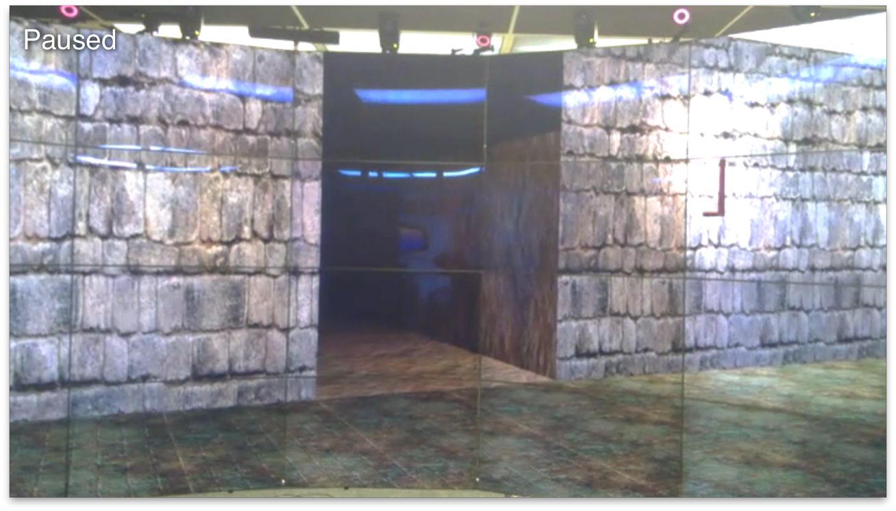
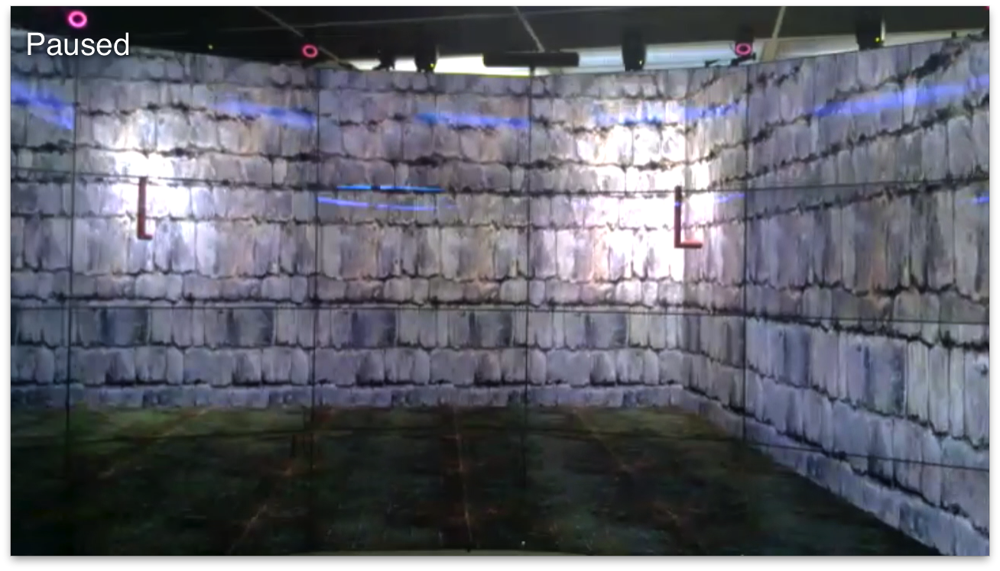
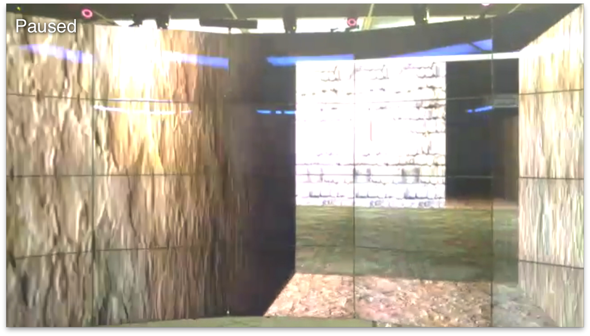
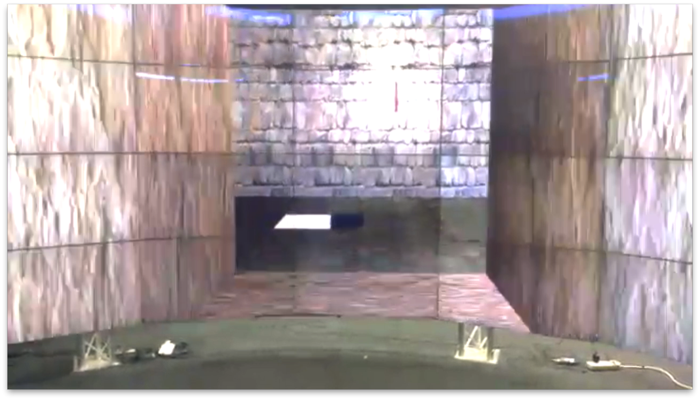

Welcome!
Welcome to the homepage of my third project of Fall 2013 Semester, I Can See Clearly Now, Project 3 of Professor Andy Johnson's Computer Graphics II course. See also my Project 1 and Project 2
Demo
Introduction
This project was proposed as a rogue-like 'game' developed as a practice on multiple techniques for omegalib and CAVE2. The original proposal can be found here.
What I actually implemented include:
- Randomly generated dungeon levels
- GPU Shaders for textures
- Navigation using Wand
- Background music and environmental sound effects
- Environmental lighting and two kinds of artificial lighting
- Extended Bullet physics engine functionality in Omegalib applied in this project
Download and Installation
- Have omegalib installed, with python support enabled and cyclops and omegaOsg modules added
- If you are using Mountain Lion or higher, you also need to have XQuartz installed and running. If you are using Mavericks, you need to download Xcode 5 and command line tools.
- Download source code of this project from Github or on top of this page
- To run the project, using following commands: $ cd [omegalib_build]/bin/ $ ./orun -s [where_you_put_this_project]/main.py
Note that to have the best experience, you need to run it on CAVE2. If you want one, you can buy one here
Detail Description
all fatures and usages discussed here are for running this app on CAVE2 if not noticed otherwise
looking into a tunnel from a room
Features and Usage
Dungeons Randomized
Each level of dungeon has random number of rooms of random sizes. Rooms are connected by tunnels at random positions and with random length. In each room there are 3-4 torches, which provide lighting, at random position of each side.
torches are at random positions
Physics Attached
Floors and walls come with attached physics attributes so that the 'character' won't go through the wall. (Note that if you keep trying, you will be able go through walls due to the accuracy issue of physics calculation)
Navigation Implemented
Currently what the 'character' can do is walking in the maze. I also implmented 'jumping' using physics but it is not really useful until creeps or monsters are put into this dungeon in the future. The 'character' starts from the room with staircases that coming from upper world and tries to find the other staircase that leads to a lower level of dungeon.
There is also a chest in a random room but currently nothing is in it!
To move the 'character' around, use analog stick of the Wand. To turn left or right, hold Button7 and move the Wand to the same direction that you want to turn to. To jump, press ButtonDown. If the 'character' falls, pressButtonUp to reset his orientation.
looking through a room into another tunnel from a tunnel
Gains
GPU Programming
I took this project as an opportunity to pick up half of what I learned in GPU Programming course, writing shaders. And learned basic of writing shaders in omegalib. Writing shaders in omegalib is somewhat different from doing in native OpenGL programs, but the underlying principle and process are the same. Generally speaking, the uniqueness reflects in following aspects:
- omegalib provides multiple default structures and uniforms that users can assign value to in cyclops appllication
- omegalib provides multiple default shaders. Users in most times will only need to write a part of the whole process
In this project, I wrote shaders for attaching texture to an entity in different ways.
Lighting
I also tried out simulating fire light and flashlight in cyclops
Bullet Physics
I continued working on Bullet Physics engine and added RigidBody for PlaneShape. PlaneShape's are extensively used in building the dungeon.
I also added addCentralForce() and setLinearVelocity() to current functionality set in cyclops because I thought they would be useful if the 'character' needs to kill creatures in the dungeon. Unfortunately, I haven't got a chance to add more fun stuff into my dungeon.
*Using xbox 360 controller as input device
This has not been acquired 100%. I tried to implement handling events from xbox 360 controller because xbox 360 controller is probably more intuitive than the Wand in this setting. Although some experiments were done, I couldn't make everything work properly before deadline.
destination ahead
Source and Reference
Sources and reference I used in this project:
- CS 525 Course Notes (I used it to pick up GPU programming)
- Encycolorpedia (I used it to choose color for lighting)
- freesound.org (I used it to find sound effects)
- Introduction to OGRE3D (I used it to choose parameters for lighting)
- lighthouse3d.com (I used it to pick up GPU programming)
- NetCave: Project Description (I used it as the idea of this project)
- Random Dungeon Generations (I used it as the foundation of generator)
- soundjay.com (I used it to find sound effects)
Future Work
There are plenty of interesting things I thought of adding to the dungeon. I hope in the future I can make this dungeon more and more fun (by making it creepy and dangerous)